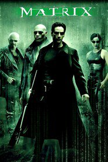
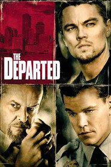

Paul CHENON
Student @Le Wagon
After finishing my engineering school in the energy and automated systems area, I was willing to get into entrepreneurship. Therefore, Le Wagon 's formation is a first step in it.
My Favorites Movies
 |
InterstellarInterstellar opens on Earth in the distant future, as Mother Nature is waging war on humanity. Famine is widespread, and all of mankind's resources are now dedicated to farming in a desperate fight for survival. A former NASA pilot and engineer named Cooper (Matthew McConaughey) has become a homesteader in order to support his teenage son Tom (Timothee Chalamet) and 10-year-old daughter Murph (Mackenzie Foy). |
|  |
The MatrixWhat if virtual reality wasn't just for fun, but was being used to imprison you? That's the dilemma that faces mild-mannered computer jockey Thomas Anderson (Keanu Reeves) in The Matrix. It's the year 1999, and Anderson (hacker alias: Neo) works in a cubicle, manning a computer and doing a little hacking on the side. |
|  |
The DepartedLegendary director Martin Scorsese takes the helm for this tale of questionable loyalties and blurring identities set in the South Boston organized crime scene and inspired by the wildly popular 2002 Hong Kong crime film Infernal Affairs. |
About this page
This page has been coded during the FullStack program @LeWagon. That was probably the best experience of my entire life.